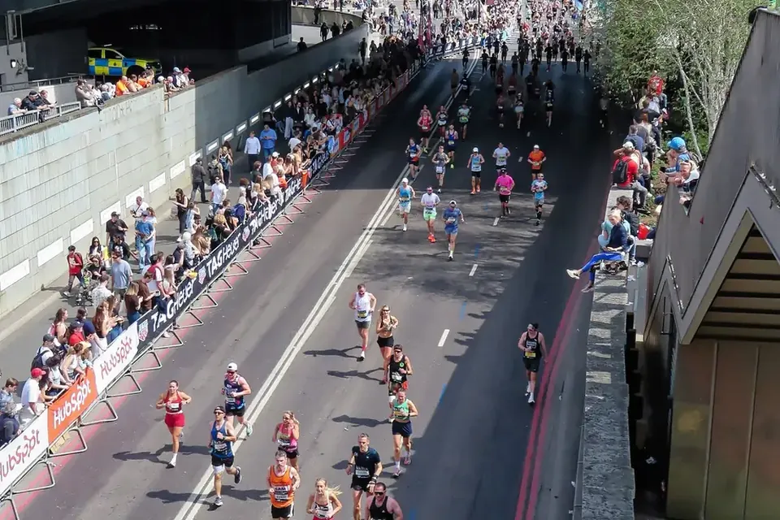

Carboloading: Was du in den Tagen vor dem Rennen essen solltest
London Marathon 2026, Upper Thames Street. Foto: Acabashi, Wikimedia Commons, CC BY-SA 4.0
Nudelparty am Vorabend, Teller voll Pasta – Carboloading gehört zum Marathon wie die Startnummer. Aber wann lohnt es sich wirklich, wie viel ist genug, und muss man dafür eine ganze Woche umstellen? Die gute Nachricht: Es ist einfacher, als viele denken.
Worum es geht
Dein Körper speichert Kohlenhydrate als Glykogen – vor allem in den Muskeln und in der Leber. Dieser Speicher ist dein schnellster Treibstoff. Bei langen Belastungen wird er nach und nach leerer, und irgendwann fühlen sich die Beine schwer an[1].
Carboloading heißt nichts anderes, als diesen Speicher in den Tagen vor dem Rennen bis zum Rand zu füllen. Dann hast du mehr Energie für die zweite Hälfte – genau dort, wo es zählt.
Für welche Rennen lohnt es sich?
Für alles, was länger als etwa 90 Minuten dauert: Marathon, lange Trailläufe, Radmarathons, Mittel- und Langdistanz im Triathlon. Bei solchen Rennen halten volle Speicher die Müdigkeit spürbar länger fern, und Ausdauersportler kommen schneller ins Ziel[2].
Für einen 10-km-Lauf oder einen Halbmarathon, den du unter 90 Minuten läufst, brauchst du kein spezielles Carboloading. Da reicht es, am Tag vorher normal und kohlenhydratreich zu essen[3]. Schon eine ältere Studie mit trainierten Läufern über 20,9 km zeigte: Extra-Laden brachte auf dieser Strecke keinen Vorteil[4].
Wie viel ist genug?
| Rennen | Kohlenhydrate |
|---|---|
| unter 90 Min. | 7–12 g/kg am Tag davor |
| über 90 Min. | 10–12 g/kg pro Tag, 36–48 Stunden lang |
| Frühstück | 1–4 g/kg, 1–4 Stunden vor dem Start |
g/kg = Gramm Kohlenhydrate pro Kilo Körpergewicht. Richtwerte der großen Sporternährungsverbände[3][1].
Ein Rechenbeispiel: Wiegst du 70 Kilo, sind 10 Gramm pro Kilo rund 700 Gramm Kohlenhydrate am Tag. Das ist mehr, als die meisten erwarten – und genau deshalb lohnt es sich, ein bisschen zu planen.
Zwei Tage reichen
Früher hieß es: erst eine Woche „leertrainieren“ und kaum Kohlenhydrate essen, dann umso mehr. Das brauchst du nicht. Schon in den 1980er-Jahren zeigte sich, dass sich die Speicher auch ohne diese harte Phase genauso gut füllen lassen[4].
Und es geht sogar schneller als gedacht: Trainierte Ausdauersportler, die einen Tag lang wenig trainierten und viele Kohlenhydrate aßen, hatten danach schon volle Speicher[5]. Weil du in der Rennwoche ohnehin weniger trainierst (mehr dazu im Beitrag „Tapering“), passt das wunderbar zusammen.
So setzt du es um
- Kohlenhydrate in jede Mahlzeit: Nudeln, Reis, Kartoffeln, Brot, Haferflocken, Obst.
- Zwischendurch snacken: Brezel, Banane, Reiswaffeln, Müsliriegel, ein Glas Saft.
- Etwas weniger Fett und Ballaststoffe: So passen mehr Kohlenhydrate auf den Teller, und der Bauch bleibt ruhig. Weißbrot statt Vollkorn ist in diesen zwei Tagen völlig in Ordnung.
- Nicht „mehr essen“, sondern „anders verteilen“: Du musst dich nicht vollstopfen – du verschiebst den Schwerpunkt auf dem Teller.
- Nichts Neues: Iss Dinge, die du kennst und gut verträgst. Teste deine Rennverpflegung schon bei langen Trainingsläufen – der Magen lässt sich daran gewöhnen[6].
Ein Beispieltag: Haferflocken mit Banane und Honig zum Frühstück, Brezel und Saft am Vormittag, ein großer Teller Nudeln mit Tomatensoße zu Mittag, Reiswaffeln und Obst am Nachmittag, Reis oder Kartoffeln am Abend. Dazu über den Tag verteilt Saft oder ein Sportgetränk.
Keine Sorge wegen der Waage
Viele sind am Renntag ein bis zwei Kilo schwerer und erschrecken. Das ist ein gutes Zeichen: Jedes Gramm Glykogen speichert der Muskel zusammen mit rund drei Gramm Wasser[7]. Die Speicher sind voll – genau das wolltest du.
Am Renntag selbst
Ein vertrautes Frühstück zwei bis drei Stunden vor dem Start: Weißbrot mit Marmelade oder Honig, eine Banane, Haferflocken. Und unterwegs helfen bei langen Rennen Gels oder Sportgetränk an den Verpflegungsstellen – wie viel, steht in unserem Halbmarathon-Leitfaden.
Fazit
Carboloading ist kein Hexenwerk: Für Rennen über 90 Minuten zwei Tage lang viele Kohlenhydrate, weniger Training, vertraute Lebensmittel – und am Renntag ein gutes Frühstück. Dann stehst du mit vollen Speichern am Start und hast Kraft bis ins Ziel.
Finde deinen nächsten Marathon
Alle Marathons und Ultras in Deutschland, Österreich, der Schweiz und Südtirol – mit Datum, Ort und Link zum Veranstalter.
Quellen
- Burke L. M., Hawley J. A., Wong S. H., Jeukendrup A. E.: Carbohydrates for training and competition. J Sports Sci 2011;29 Suppl 1:S17–27. doi:10.1080/02640414.2011.585473
- Hawley J. A., Schabort E. J., Noakes T. D., Dennis S. C.: Carbohydrate-loading and exercise performance. An update. Sports Med 1997;24:73–81. doi:10.2165/00007256-199724020-00001
- Thomas D. T., Erdman K. A., Burke L. M.: American College of Sports Medicine Joint Position Statement. Nutrition and Athletic Performance. Med Sci Sports Exerc 2016;48:543–568. doi:10.1249/MSS.0000000000000852
- Sherman W. M., Costill D. L., Fink W. J., Miller J. M.: Effect of exercise-diet manipulation on muscle glycogen and its subsequent utilization during performance. Int J Sports Med 1981;2:114–118. doi:10.1055/s-2008-1034594
- Bussau V. A., Fairchild T. J., Rao A., Steele P., Fournier P. A.: Carbohydrate loading in human muscle: an improved 1 day protocol. Eur J Appl Physiol 2002;87:290–295. doi:10.1007/s00421-002-0621-5
- Jeukendrup A. E.: Training the Gut for Athletes. Sports Med 2017;47 Suppl 1:101–110. PMC5371619
- Fernández-Elías V. E., Ortega J. F., Nelson R. K., Mora-Rodriguez R.: Relationship between muscle water and glycogen recovery after prolonged exercise in the heat in humans. Eur J Appl Physiol 2015;115:1919–1926. doi:10.1007/s00421-015-3175-z
Alle Quellen abgerufen am 4. November 2026. Beispieltag und Ernährungstipps ohne Quellenangabe sind Erfahrungswerte.